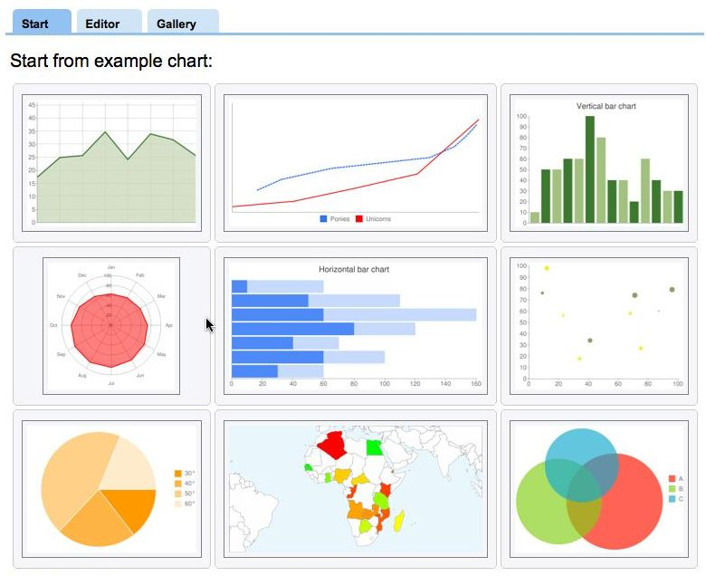
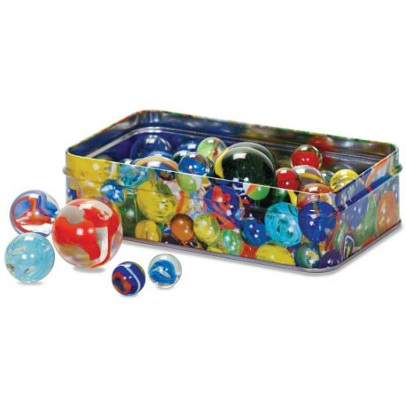

Mon portfolio
-

API REST JS
Développement d'une API REST lié à une DAO qui permet d'avoir connaissance de tous les livres d'une bibliothèque ainsi que des informations sur l'auteur de chacun de ces livres à l'aide de requêtes sur l'API en javascript
Lien vers projet GitHub -

Analyse donnée à partir d'un fichier
Développement d'un site faisant l'analyse des mariages de l'année 2017 à 2021 avec notamment comme filtre le type de mariage, nombre de mariages par années,nombre de mariage par département en javascript
Lien vers projet GitHub -

Projet boîtes à billes
Développement d'une application permettant de faire la représentation graphique de chaque stratégie de placement de billes "Chaînage,Double Choix,Adressage ouvert linéaire,Adressage ouvert quadratique". Ce projet à été developpé en Java
Lien vers projet GitHub